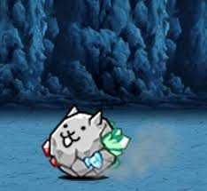
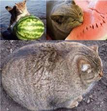
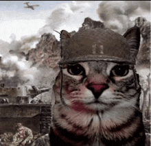
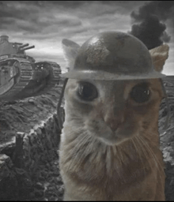
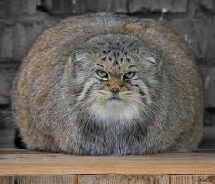

My Arcane Odyssey Starter Guide

Arcane odyssey is a very big game, and somtimes begginers may find it hard or confusing, this guide is here to help. to start of this guide will introduce basic mechanics and then recomend builds or how to start out.

What we will be teaching in this guide
- #1 Gemcrafting
- #2 Potion Making
- #3 Cooking
- #4 Magics & Class Tips
- #5 Builds, Classes, & Stats
- #6 Earlygame
- #7 Midgame
- #8 Late-Mid game
- #9 Endgame
You can click the multicolored parts of the titles to go to the respective links such as builds, brewing, gemcrafting, etc.
#1 Gem Crafting

Gem Crafting is a very important part of arcane odyssey, you can craft gems at gemcrafting tables found around the map or on brigs owned by players. Gem crafting just like the other crafting skills is very important it can change your whole playthrough and allow you to make more powerfull builds and have bonus effects such as swim speed, movement speed, or even infinite air supply! some gems are better than others such as mystic gems which are rare and expensive in the beggining of your playthrough, these gems have two stats with the exeption of musgavite which doubles your regent effect, regents are the secondary materials required to craft gems and are the materials that grant the special effects, once you reach the max level of gemcrafting you can combine 2 gems to create a gem with either better stats, more stats, or stronger/more diverse effects, i do have to warn you that all stats are lowered on both gems and then combined.
#2 Potion Making

Potion making is almost as important as gem crafting, this is beacause you can create potions that can either help you as utility, buffs, or offense, some of these potions include greese which loweres your weapon damage but gives your weapon atacks permanant effects, or gels which can be aplied to your hands to give an effect(s), these effects can either damage your enemies, help your teamates, or help with your synergies which will be talked about in the Classes/Magics section, i recomend to max potionmaking first due to potions helping you all through out your playthrough and make your playthroughs much more enjoyable and dramiticly easier.
#3 Cooking

Cooking is a vital mechanic in arcane odyssey alowing you to get incredible buffs, more mana, more hp, or troll friends by giving them effects that will kill them for the next 2 hours, cooking is by far the easiest skill to master and the extra hp mana and buffs help a lot with your playthrough, you can cook meals by putting food into a cooking pot, you can get fish by fishing or by opening chests and getting it by chance, you can get meat by hunting animals either in the normal map or the dark sea(Endgame, not recomended for people without an endgame loadout, ex 200 power, 500 regen. ex2 100 power 200 atack speed, 600 defense, 40 haste.)
#4 Magics and Class Tips

There are many classes and magics in arcane odyssey, the recomended classes for begginers are conjurer, warrior, warlord, and for rarer cases the vitality classes, or warlock. the endgame class and the hardest class to learn is mage due to all the synergies and spells with thier modifications, this is unlikely to change in the future. The magics you choose are very important unless you choose a class that does not use magic such as warlord, warrior, or berserker. the magics you choose may nerf or buff certain aspects of your gameplay such as an ice and sailor style warlock can freeze enemies in place and do good damage but a light mage can blind oponents and atacks very fast but does little to no damage, the recomended begginer magics are lightning, fire, acid for conjurer, ice for warlock, or crystal which is currently one of the best magics due to its ok speed, giant aoe, very good damage, and a buff that increases your damage by 10% upto 50% every time you hit your target.
#5 Recommended Builds , Classes & Stats .
Your build is very important to your playthrough, people usualy focus on builds nearing endgame but your build in the beggining can matter too, this guide will explain what the stats are and what they do, first of all power, this stat buffs your damage and is one of the most important stats in pve or pvp. next is size which of course gives you extra size on your atacks, good for begginers, midgame players, and people who do pvp, you dont need size if you do pvp and are good at the game. nextb is dexterity which lets your character move faster, this help traverse the maps and helps in bossfights but is nerfed by 50% when in combat. then we have atack speed, this is how fast your atacks charge up and travel, reduces endlag(the imobility after using an atack) and reduces animation duration. next up is range which lets your atacks go further, i will have to warn you that range scales with different atacks differently. there is also haste which reduces the cooldown on your abilities. and resistance which reduces the damage you take while charging, using, and during the endlag of atacks. after that is percing, this stat reduces effectivness of enemy armor increasing damage against armored enemies and aplying a debuff to the enemies armor for the next 10 seconds. and finnaly regeneration allows you to heal from hitting your atacks, this is very good since new players and players who dont know many mechanics of bosses usualy struggle to keep thier health in check and die, this stat will let you fight bosses for longer and have an easier time. Next up is your stat alocation, this is what lets you choose one of the eleven classes, these classes are Mage, Paladin, Warlock, Berserker, Warlord, Warrior, Knight, Oracle, Juggernaught, Conjurer, And Savant.
Mage

The Mage uses magic and is a full magic build, they can learn meany spells and lost spells, they are currently the strongest class in the game. not begginer friendly. unlimited potential.
Palladin

The Paladin uses one magic and spirit weapons/artifacts, these are basicly magics without as much customization, you can also infuse spirit into magic and magic into spirit, this buffs certain aspects of your atacks. this class is for people who have some experience with the game but also is not a bad starter class. ok potential.
Warlock
The Warlock uses Strength and Magic, this class has one magic and one fighting style, you can infuse your fighting style with magic, this buffs certain aspects of your atacks. the class is not begginer friendly but is easier than mage. very high potential.
Berserker

The Berserker uses strength and has 2 fighting styles, this class is a unique class that barely has any ranged atacks, due to this the class usualy has to get close up to your enemies which makes it prone to taking large amounts of damage. not begginer friendly. medium potential.
Warlord

The Warlord uses weapons and strength, this class uses weapons, collosal weapons, and fighting styles, due to this it has great versatility and can atack from up close, far away, and midrange, this class dominates with power and size due to its already large and powerfull atacks. partialy begginer friendly. extremly high potential.
Warrior

Warrior only uses weapons, this class has access to high level atacks earlier in the game and has great range, this class has incredible mobility and unique atacks which can dominate enemies in pve and pvp alike. it is one of the best classes but is outclassed by mage. recomended for begginers. amazing potential.
Knight
Knight uses vitality and weapons, this class is one of the few classes that the comunity just doesnt use, this is due to better options and due to teh class just overall being mid and this makes it be forgotten. not recomended for begginers. average potential.
Oracle

Oracle uses vitality, this class is rather strong due to its unique bonus, it has inherent regeneration alowing you to heal when you atack, it also has acces to higher tier atacks in the spirit weapons and artifacts, this make the class rather good because it can use a large amount of fast and strong atacks that heal you, overall one of the best classes that is also overshadowed by mage. not recomended but can be a good class for begginers. great potential.
Juggernaught

Juggernaught uses strength and vitality, this class is widely considered to be one of the worst classes and it is not widely used due to it not being able to use many spirit weapon rites and it ve little ranged abilities and be weaker than berserker in the close range department, overall an ok class but is overshadowed by many other classes. not recomended for begginers almost no potential.
Conjuerer
Conjuerer uses weapons and magic, this class is widely considered to be the best class under mage, this class has high mobility and good magic, it can learn a few spells and can use a few weapons, this lets it have little to no downsides, it can also infuse its weapons with magic. very begginer friendly, recomended first class. has good potential.
Savant
Savant uses 3 or more stats, it is very versitile and random but is weaker than other classes(depends on the build), jack of all trades master of none. dont use this class as a begginer. has almost unlimited potential.
Early Game

In the early game all you really have to do is level up, learn the game mechanics, and just figure out your playstyle, very simple but it is hard since you dont know how to fight bosses or even where to find them. you dont know where to find what you need for your build(you might not even fully understand the stats yet), during this time you dont know good money earning methods and are probably broke and are getting carried by a mid game or late game player, of course if you are nearing the 100 hour mark you probably have learned many mechanics and maybe learned some techniques such as the sideways wall jump. the players in this phase usualy have 0-150 hrs total hours played, depends on the player.
Mid Game

In the midgame you are the average player playing for fun, your build is probably mediocor so try fixing it and making it better, fight lots of bosses to make your aim and gamesense better, you can also dabble in a little bounty hunting and pvp in this stage(ragequitin g the game due to pvp is not a rare event).
Late-Mid game

You are on your way to endgame and just dont have enough funds, you should be starting a fleet and trying to get it to legendary to try and amass a lot of wealth for some good builds, you should have aleady maxed your crafting skills,you should be getting have a few talents, and you can now start a guild or clan with no worries.
EndGame

In the endgame people usualy have over 1000 hours of total playtime, by this time you should know your favorite classes, builds, and money earning methods, you should also be strong enough to go the the third and 4th levels of the dark sea, which is a great oney earning method(dont become a chonker while achieving this stage of progresion).
The No Life

At this point the player has over 5000 hours and hasnt taken a shower in 3 months, he has forgotten what the glowing ball in the sky is called, the green pointy things on the ground are now fatal to the touch for him, he has a 0.2 gpa average if he is still even in school, he probably has his keyboard and moniter floating around him due to his own gravitational pull that was earned as a "rewards" for him sitting in a musty gaming chair that is now on life support for 3 months without moving ut still consuming abnormal amounts of food, he can also be called a biological weapon since even flies die when they get in a 1 km radius of him(remember, everything has a limit, especialy gaming)